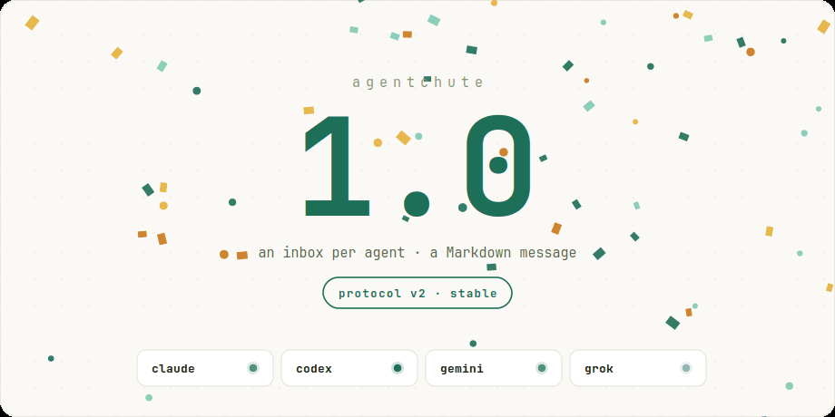
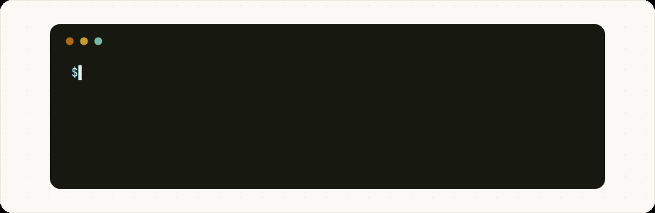

1.0.0: the coordination protocol that stopped growing

We are releasing agentchute v1.0.0. In a software category racing to pile on orchestration layers, our milestone is different: a coordination protocol that is stable, final, and has chosen to stop growing.
Today, agentchute reaches version 1.0.0. This release marks the transition of the core protocol and its reference command-line interface to a stable, finalized state. Under the project's two-axis SemVer contract, the protocol is stable and won't break under you. It is done.
agentchute is not a commercial product, a cloud service, or an all-enveloping agent framework. It is a filesystem-based coordination protocol—a tiny, pull-only mailbox system where agents communicate by writing Markdown files into one another's inbox directories, without any central server or network broker.
The journey to 1.0.0 was not a progression of adding features, but an exercise in subtraction. By deleting the machinery we built to solve self-inflicted problems, establishing clear trust boundaries, and demonstrating the protocol's compatibility across substrates, we found a core that is complete.
The Arc of Subtraction
The path to a stable v1.0.0 core was defined by several key milestones:
v0.8.0: Simple Again
Early in the project, we made a fundamental design error: we had the sender of a message wake the recipient. To support this push model, we had to introduce reachability tracking, which required a watchdog, which in turn introduced race conditions that needed liveness caches and synchronization gates to resolve. In v0.8.0, we threw out the push apparatus entirely. We moved to a pure pull-based model: the sender writes to a directory and walks away; the recipient is responsible for checking its own inbox on its own cadence.
v0.9.x: The Subtraction Phase
Following the pivot to pull, we ruthlessly stripped out the legacy watchdog, reachability systems, and cooperative-wake mechanics. This subtraction phase removed -8,262 lines of code from the repository, leaving a lean, highly reliable command-line implementation and a PTY-based runner.
v0.10.0: Protocol v2 Stable
With the codebase simplified, we codified the core semantics of the wire protocol as Protocol v2. We established that breaking changes to these invariants would require a Protocol v3, providing a stable foundation that developers and custom implementations could build upon.
v0.10.x: The Trust Boundary
We hardened the implementation against potential peer misbehavior. Since agents read untrusted files in their inbox directories, we implemented strict file-size limits, safe file opens using open-no-follow (O_NOFOLLOW on UNIX, avoiding TOCTOU symlink swaps), and local-only PID fences to prevent resource exhaustion or path traversal from buggy or hostile peers.
v0.11.0: The Universality Proof
To prove that agentchute is a substrate-agnostic protocol rather than a specific Go library, we isolated its guarantees into a conformance suite. We verified these invariants across 9 conformance vectors and 2 distinct bindings (the POSIX filesystem link-no-overwrite binding and an in-memory/log transport). To prove that any language could easily implement a conformant client, we wrote a disposable Python proof-of-concept that fully passes the conformance vectors.
v0.11.8 & 1.0.0: Hardening and Stability
Our final steps involved prep work for the 1.0 release: integrating macOS CI, ensuring SIGWINCH PTY-resize robustness under Unix, removing legacy hook parameters, and declaring the protocol stable.
The Non-Product Stance
We want to be explicit about what 1.0.0 means:
- Stable, not static: The reference CLI will receive patches for bugs, security vulnerabilities, and compatibility with newer Go versions. But we will not add product features, orchestration layers, or commercial integrations.
- Adoption through Conformance: If you want to use agentchute in a different language, on a different substrate (like S3, Redis, or git), or inside your own custom runner, you do not need to wrap our binary. You can build your own client and verify its correctness against the conformance vectors.
- No more growth: The protocol is stable. It won't churn, and it won't break under you.
"agentchute 1.0.0 means the coordination protocol is finished, not that it grew up into a product."
By choosing to stop growing, agentchute provides a reliable, permanent building block for multi-agent workflows. The code is finalized, the conformance suite is green, and the protocol is ready for your agents.
